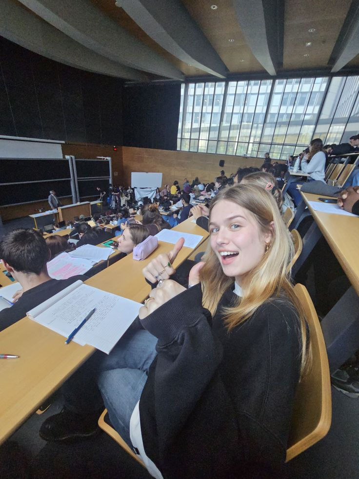

À propos de l'Université de technologie
Notre université est dédiée à l'enseignement et à la recherche en informatique. Fondée en 2020 par le CEO Dr.AMADOU SEKOU HALIDOU, nous offrons des programmes de qualité pour formez les leaders de demain en technologie. l’Université de Technologie est née d’une ambition claire formant une nouvelle génération de professionnels capables de répondre aux défis technologiques du monde contemporain. Depuis sa création, notre institution s’est imposée comme un acteur majeur de l’enseignement supérieur, en mettant l’accent sur la qualité, la pertinence et l’innovation pédagogique.

Dr.AMADOU SEKOU HALIDOU
Notre vision
Nous croyons fermement que l’éducation est un levier puissant de transformation sociale et économique. C’est pourquoi nous avons conçu un modèle d’enseignement qui allie savoir théorique, pratique professionnelle et ouverture sur le monde. Nos étudiants ne sont pas seulement formés pour obtenir un diplôme, mais pour devenir des acteurs du changement, capables de créer, d’innover et de diriger.

Nos missions
- Former des ingénieurs innovants
- Promouvoir la recherche appliquée
- Favoriser les partenariats industriels
Nos objectifs
Devenir une référence en Afrique dans l’enseignement supérieur technologique. offrir une éducation de qualité, combinant théorie et pratique, afin de former des leaders capables d’innover et de contribuer au développement économique et social. Former des experts capables de concevoir, développer et gérer des solutions technologiques innovantes.
